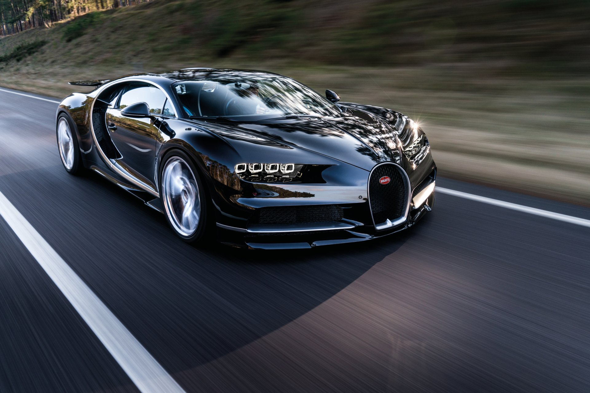

Nosotros podemos...
Nos encanta tenerte por aquí, nos encanta tanto que estamos dispuestos a ofrecerte una guía completa por si buscas adquirir un auto de colección, único en su tipo e ideal para aquellos "exigentes" amantes del automovilismo. Ponte en contacto con Nosotrosy te asesoraremos en la compra - venta de un vehículo.
